Revue scientifique
Revue UNIKIN-FLSH
Plateforme de revue scientifique sous OJS : mise en place, thème personnalisé et déploiement en production.
Visiter le siteJe code, je filme, je communique et j’entraîne. Basé à Kinshasa, je fais le lien entre la technologie et les gens.
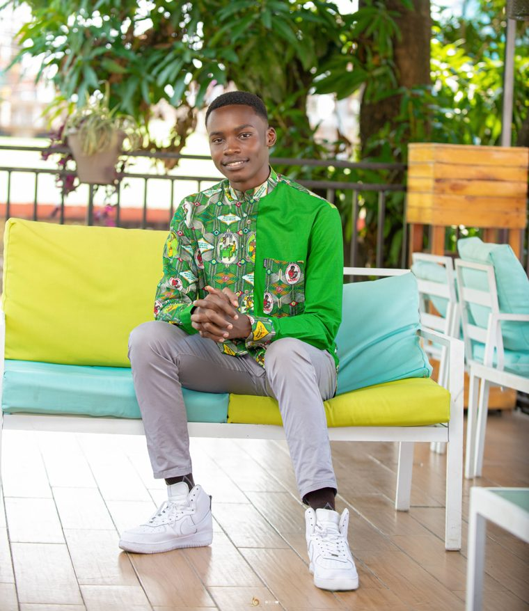
Kinshasa, RDCChoisis une facette pour voir ce que je fais, avec quels outils.
Freelance depuis 2021. Je conçois des sites, des applications et des outils de gestion pour des institutions, des associations et des entreprises, du prototype à la mise en production.
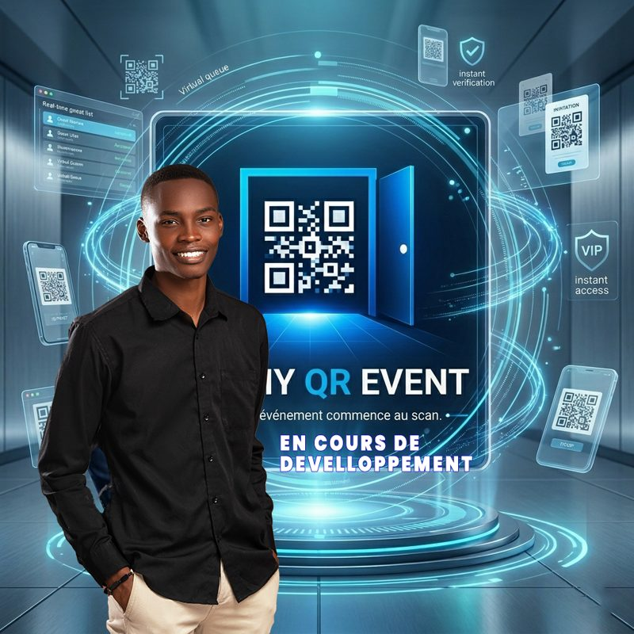
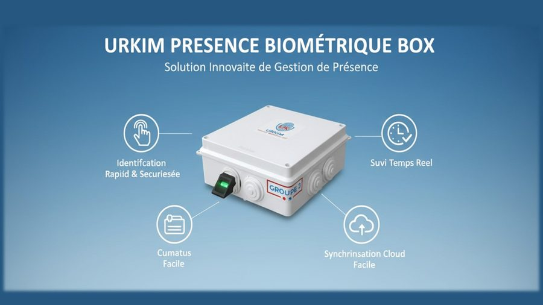
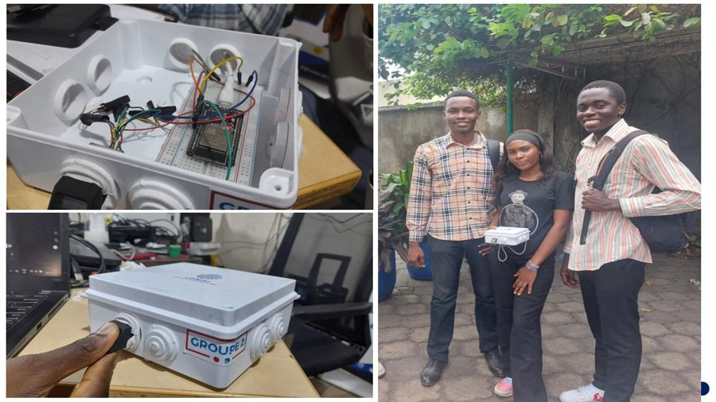
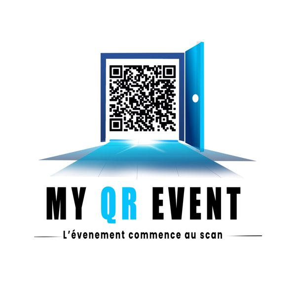
Plans marketing, contenus pour TikTok, Facebook et Instagram, affiches et banderoles. J’accompagne High Vision All Service, DKC Business et FFPMU-RDC.
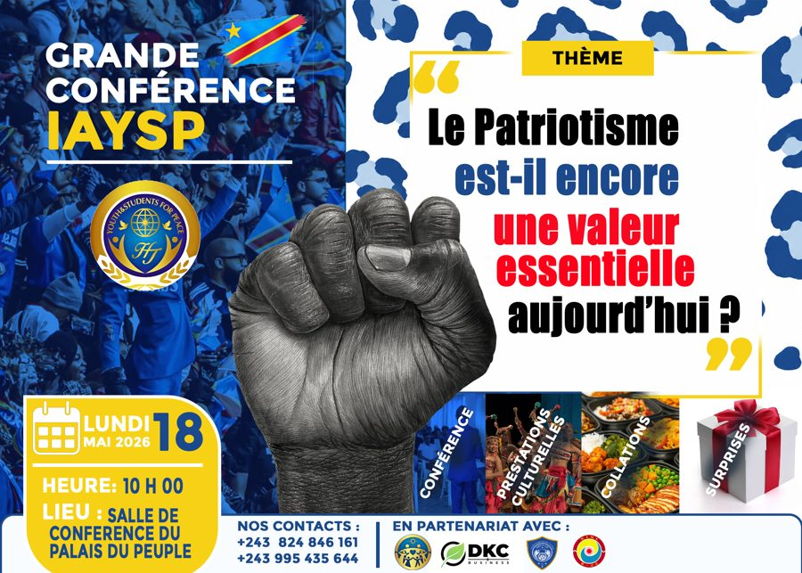
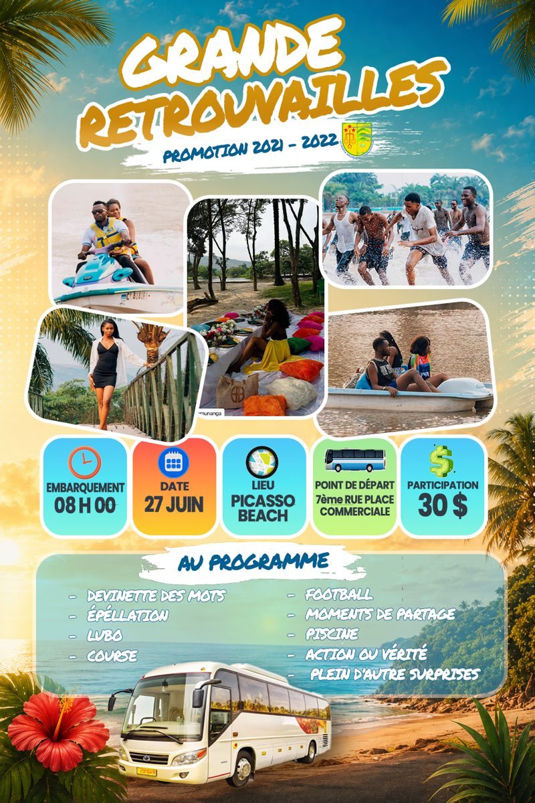
Identités visuelles, affiches, billets d’entrée et shorts pensés pour les réseaux. Formé à l’infographie chez High Vision.
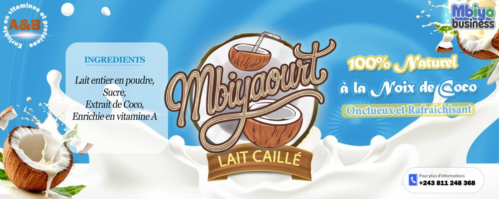
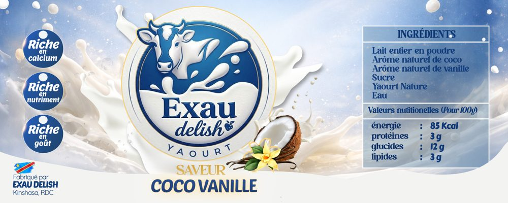
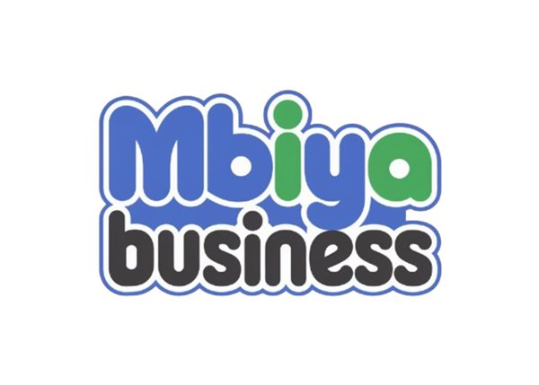
Entraîneur en clubs et en cours privés, arbitre en compétition. Le sport m’a appris la discipline que j’applique à mes projets.
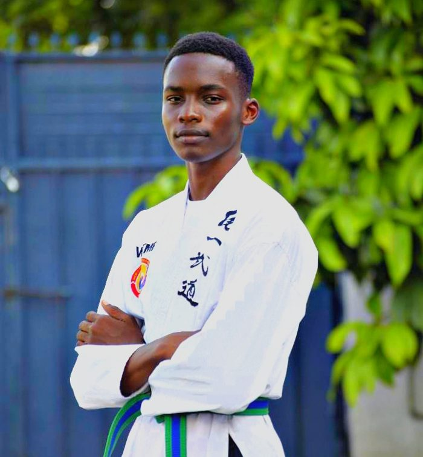
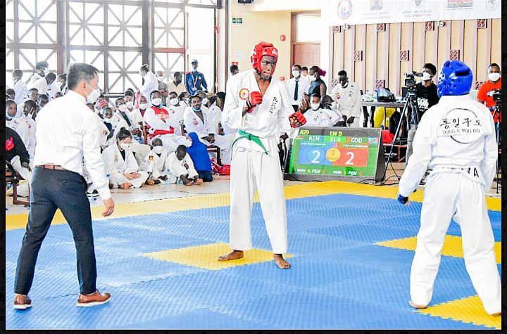
Je traite les retours et l’expérience des clients avec RingCentral Dimelo. Formé à la programmation mobile à l’Orange Digital Center.
Transcription, traduction et interprétation en temps réel, y compris en ligne par Zoom, notamment pour la branche FFPMU Cheonshim Won.
Des plateformes utilisées au quotidien par des étudiants, des chercheurs et des membres d’associations.
Plateforme de revue scientifique sous OJS : mise en place, thème personnalisé et déploiement en production.
Visiter le siteGestion du site et panneau d’administration pour publier les actualités et les annonces.
Visiter le siteSystème sur Google Sheets et Apps Script pour suivre les membres de la fédération.
SaaS de gestion d’événements par QR code, pour contrôler les entrées et les invités.
Application mobile fonctionnelle, conçue et développée de bout en bout.
Refonte graphique des billets standard et VIP du site MK Village Ditalaji, à Limete.
Solution de gestion de présence par identification biométrique, de la conception du boîtier à la présentation.
Cinq ans de pratique, en parallèle d’un baccalauréat en génie logiciel.
Formations
Entrepreneuriat (UNICEF), infographie (High Vision), programmation mobile (Orange Digital Center), éducation du caractère (IAYSP RDC), anglais (Cisco Skills for All).
Langues
Français, langue maternelle. Anglais professionnel. Lingala, notions.